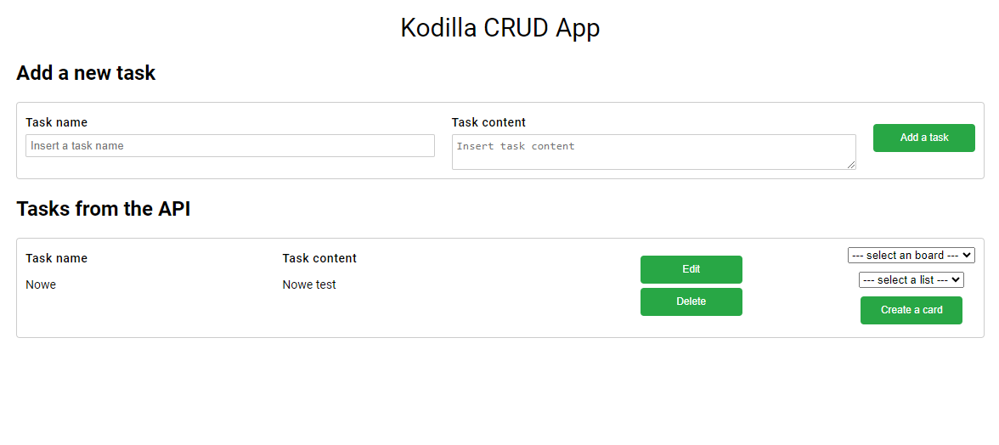
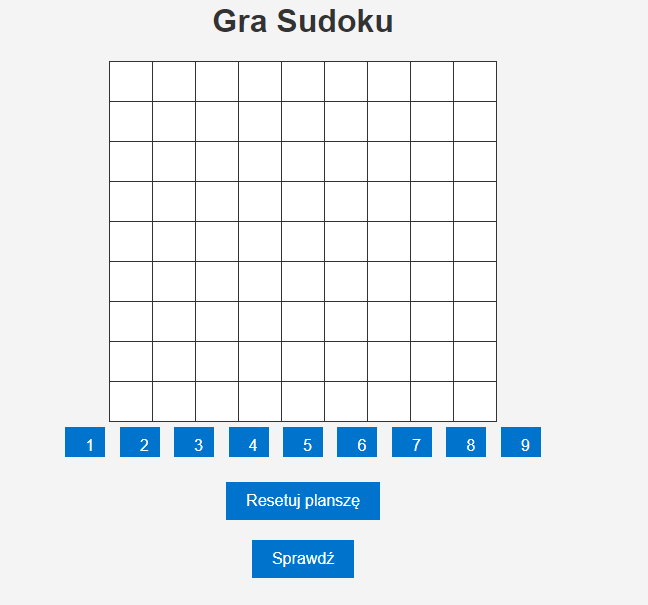

Moje projekty
Menager zadań
Opis:
Projekt "Task Manager" to innowacyjna aplikacja budowana podczas intensywnego bootcampu, gdzie moje umiejętności programistyczne rozwijały się pod czujnym okiem doświadczonych mentorów. Aplikacja ta reprezentuje kompletny stos technologiczny, łącząc backend napisany w języku Java z frontendem opartym na HTML, CSS i JavaScript.
Backend, dostępny pod adresem https://rafalnicki.alwaysdata.net/, funkcjonuje jako efektywne REST API, integrując się z interfejsem Trello API. Jego główne zadania to tworzenie nowych zadań na tablicy Trello oraz utrzymywanie ich kopii w bazie danych MySQL. Warto zaznaczyć, że operacje usuwania są przeprowadzane jedynie w bazie MySQL, co zapewnia skuteczne i bezpieczne zarządzanie zadaniami.
Dodatkowo backend wykonuje istotne obliczenia, prezentując wyniki w celu udowodnienia aktywnego działania. To nie tylko funkcjonalny element aplikacji, ale również doskonały przykład wykorzystania Java do zaawansowanych operacji obliczeniowych.
Frontend, dostępny na GitHub Pages pod adresem https://nickirafal.github.io/tasks/index.html, został zaimplementowany przy użyciu standardowych technologii webowych. Interfejs użytkownika jest przyjazny, a intuicyjna nawigacja umożliwia łatwe korzystanie z aplikacji.
Projekt jest oparty na darmowych rozwiązaniach, co dodatkowo podkreśla jego dostępność i przystępność. Repozytoria z kodem źródłowym są dostępne publicznie, zachęcając do wglądu oraz potencjalnej współpracy:
- Frontend kod źródłowy: Tasks Frontend
- Backend kod źródłowy: Tasks Beckend
Zapraszam do zgłaszania opinii, sugestii i współpracy. Projekt ten nie tylko podkreśla moje umiejętności programistyczne, ale również dowodzi mojej zdolności do efektywnej integracji różnych technologii w celu stworzenia kompletnego, działającego rozwiązania.
Gra Sudoku

Opis:
Projekt "Sudoku Game" to efekt mojej indywidualnej pracy podczas kursu, gdzie miałem okazję wykorzystać zdobytą wiedzę w praktyce. Gra oparta jest na klasycznych zasadach sudoku, oferując graczom interaktywną platformę do rozwiązywania logicznych łamigłówek.
Backend napisany w Javie pełni kluczową rolę w obsłudze gry. Znajduje się na serwerach HEROKU, co gwarantuje nieprzerwane działanie aplikacji. Backend komunikuje się z bazą danych PostgreSQL, przechowując informacje o planszach do gry i obsługując operacje związane z mechaniką sudoku.
Inaczej nie da się pokazać że serwer odpowiada więc ten link spowoduje wyświetlenie pustej planczy w jsonie.
Link do działającego backendu: Sudoku Backend
Frontend, dostępny na platformie GitHub, został zaimplementowany przy użyciu HTML, JavaScript i wykorzystuje bibliotekę jQuery. Interfejs jest przejrzysty i intuicyjny, umożliwiając graczom łatwe poruszanie się po planszy oraz wprowadzanie swoich rozwiązań.
Link do frontendu: Sudoku Frontend
Ten projekt oparty jest o rozwiązania komercyjne ale w niedługim czasie zostanie przeniesiony do chmury jak jego poprzednik.
- Frontend kod źródłowy SudokuFrontend Sudoku
- Beckend kod źródłowy Sudoku Beckend Sudoku
Zasady gry w Sudoku:
Sudoku to logiczna gra planszowa, w której celem jest wypełnienie dziewięciu odrębnych kwadratów 3x3 oraz całą planszę 9x9 cyframi od 1 do 9. Zasady są proste: każda cyfra musi wystąpić tylko raz w każdym wierszu, kolumnie i kwadracie 3x3. Plansza do gry początkowo zawiera pewne cyfry, a gracz musi uzupełnić pozostałe, stosując się do zasad.
Projekt "Sudoku Game" nie tylko stanowi wyzwanie intelektualne dla graczy, ale również prezentuje umiejętności programistyczne, łącząc front i backend w spójną, interaktywną całość. Zachęcam do wypróbowania gry i rozwijania swoich umiejętności logicznego myślenia!
Kantor wymiany walut

Opis: W trakcie realizacji
Projekt: Aplikacja Kantor Wymiany Walut
Kantor Wymiany Walut to moje najnowsze przedsięwzięcie, nad którym obecnie pracuję. Projekt ten skupia się na stworzeniu wydajnego i łatwego w obsłudze systemu wymiany walut online.
Technologie wykorzystane w projekcie:
- Backend w Java z wykorzystaniem Spring Boot
- Frontend w Vaadin
- Biblioteka Lombok
- Baza danych MySQL
- ModelMapper
- Hibernate
- JUnit dla testów
Funkcje aplikacji:
- Integracja z API Narodowego Banku Polskiego (NBP) w celu uzyskania bieżących kursów walut.
- Mechanizm rejestracji i logowania użytkowników.
- Wirtualny system wymiany walut, umożliwiający użytkownikom dokonywanie symulowanych transakcji.
- Bezpieczne przechowywanie danych użytkowników przy użyciu haseł i zabezpieczeń.
Projekt opiera się na architekturze typowego REST API, które umożliwia pobieranie bieżących kursów walut i obsługę operacji wymiany. Jego celem jest dostarczenie intuicyjnego interfejsu dla użytkowników, dzięki zastosowaniu nowoczesnych technologii.
Chociaż nie posiada systemu płatności, jest to doskonałe narzędzie dla osób chcących zaznajomić się z procesem wymiany walut przed podjęciem rzeczywistych transakcji. System przydziela użytkownikom walutę wirtualną, co pozwala na bezpieczne eksperymentowanie z różnymi kursami i strategiami wymiany.
Cieszę się, że mogę pracować nad tak innowacyjnym projektem, który nie tylko integruje różne technologie, ale również dostarcza wartość dla użytkowników zainteresowanych rynkiem walutowym.
Ponieważ trwają prace nad tym projektem to mogę podzielić się tylko kodem żródłowym.
- Frontend kod żródłowy :Frontend Kantor
- Beckend kod żródłowy :Beckend Kantor